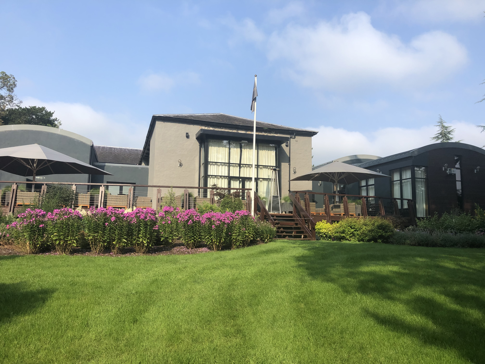

Dunboyne is within close access to a number of top class hotels.
Within the town, we have Dunboyne Castle Hotel & Spa. It offers 145 spacious rooms, blending modern with traditional luxury. It also offers specialist treatments, a hydrotherapy pool, heated pool loungers, sauna, steam room, fully equipped gym and outdoor hot tub.
For further details, check:
Dunboyne Castle Within a 10 minute drive, there is Carton House hotel which is one of Ireland's most historic Palladian houses, with 165 bedrooms and offering 2 world-class, 18-hole championship golf courses, 2 swimming pools and a luxury spa.
Carton House has dining options to suit all tastes and group sizes: The Linden Tree restaurant, The Kitchen Bar and The Carriage House in the beautifully converted old stable block.
It’s also has many famous guests. Queen Victoria knew it well. Grace Kelly and Prince Rainier came for a holiday. Peter Sellers and Marianne Faithfull lived here for years.
For further details (including a fly-over video of the hotel), check:
Carton House